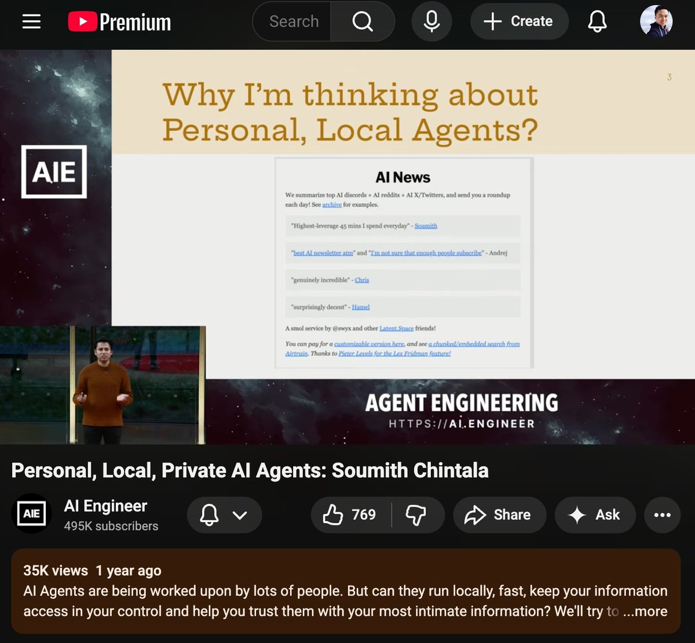
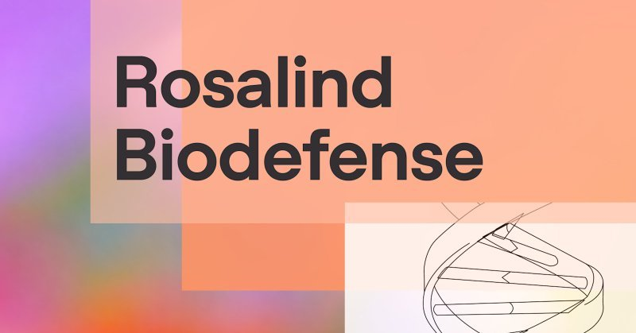
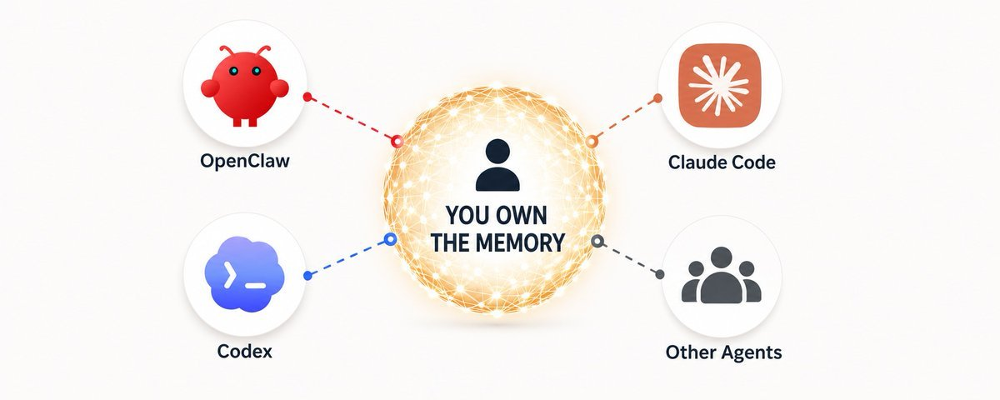
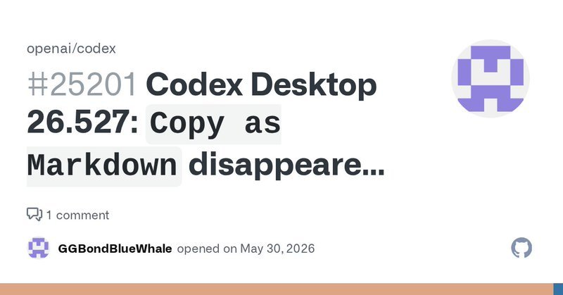
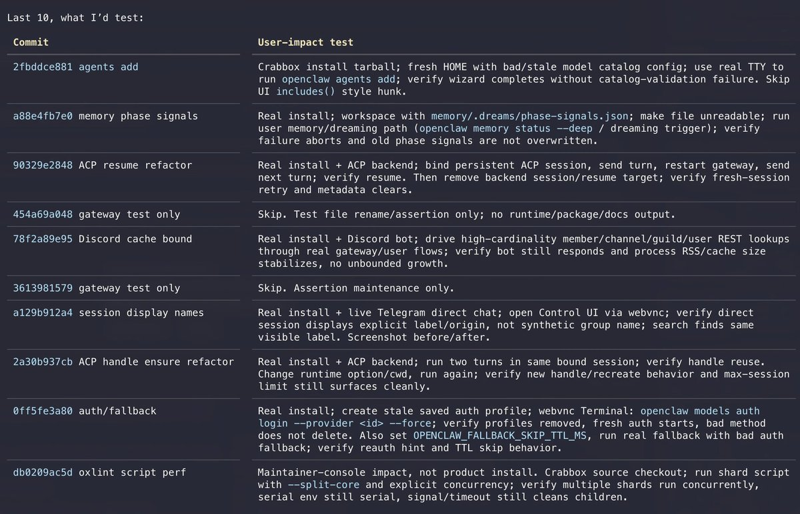

AI 日报 · 2026年6月2日 · 周二
AI 建造者日报
当 PewDiePie 一个 YouTuber 用 vibecoding 一夜之间做出万星 AI 生产力套件时，它暴露的不仅是门槛降低——更是知识工作 Agent 这个品类本身可能没有护城河。与此同时，Sam Altman 宣布 OpenAI Robotics 正式成立，Garry Tan 预言 2027 年将爆发"AI Harness 战争"。
Agent
Robotics
Harness
持续学习
开源
GitHub Trending
1
深度对话
9
建造者动态
14
趋势项目
1
今日播客
今日要点
💥 PewDiePie vibecoded 万星 AI 套件。 Swyx 投下震撼弹：PewDiePie 用 vibecoding 做了一个 OpenCode 包装器，完整的个人 AI 生产力套件（邮件、文档、日历），一天内 HN 头条、百万浏览、万星。知识工作 Agent 创业公司面临前所未有的门槛挑战。

🤖 OpenAI Robotics 正式成立。 Sam Altman 宣布由 Aditya Ramesh 领导的新部门，正在招聘全栈硬件、系统、ML 工程师。短期聚焦辅助熟练工人的基建机器人，长期愿景是每个人都有一个能帮自己做任何事的个人机器人。

深度对话
Yann Dubois：为什么 AI 进步突然感觉真实了
核心论点：OpenAI 后训练 Frontiers 团队联合负责人 Yann Dubois（GPT 5.5、o3、GPT-5 Thinking 的核心贡献者）在 MAD Podcast 上深度分享了三个关键洞察，解释为什么 AI 进步感觉像阶跃函数，并坦承持续学习仍是最大的未解决问题。
可靠性跨过临界点
大约 2025 年 12 月，模型终于达到了可以真正信任它完成大量工作的可靠度。Agent 模型每两分钟有一定的出错概率，时间越长越容易出错——5.5 大幅降低了这个概率，推理速度提升约 2 倍。
自我加速循环
好模型帮助训练更好的模型，好模型帮助研究员构建更好的工具，形成飞轮。从竞赛到有用性到用户——这就是当下的感受。
强化学习从竞赛走向真实世界
o1/o3 时代 RL 只能优化"可验证奖励"（数学题、编程竞赛），现在这些算法已经被泛化到真实用户场景。
持续学习：最大未解难题
当前模型在企业中就像"入职即巅峰但无法成长"的员工——起点很高，但不学习公司知识、不随着时间变高效。"三年前 ChatGPT 发布时我以为 OpenAI 六个月内就能解决持续学习，三年后我们还没到那一步。"
给创业者的建议：深耕最后一公里
不要花太多精力在通用 harness 上——模型能力进步太快，通用 harness 会被吃掉。但在特定垂直领域的最后一公里（权限、连接器、领域知识）有巨大空间。
建造者动态
OpenAI、Vercel、Box、YC、Swyx、OpenClaw 与 Codex 的今天
OpenAI CEO Sam Altman
宣布 OpenAI Robotics 正式成立，由 Aditya Ramesh 领导，正在招聘全栈硬件、系统、ML 工程师。短期聚焦辅助熟练工人的基建机器人，长期愿景是每个人都有一个能帮自己做任何事的个人机器人。同天还宣布 OpenAI 将协助全球生物防御准备。
Vercel CEO Guillermo Rauch
CEO 和 CTO 们正在疯狂回归写代码，因为 coding agent 让他们重新爱上了交付软件。"上市公司 CEO 私信我说他们用 Claude Code + Vercel 重新找回了 shipping 的快感。Coding agent 是企业 PLG 化的终极武器——烂软件再也藏不住了。"
Box CEO Aaron Levie
指出企业 AI Agent 的 #1 问题是上下文。从 coding agent（代码库天然提供大量上下文）转向知识工作 agent 时，上下文问题急剧恶化：数据分散在遗留系统中、权限控制与真实工作流不匹配、大量决策和流程存在于人的"部落知识"中。能解决这个问题的公司将获得巨大杠杆。
YC CEO Garry Tan
连续发声预言 2027 年将爆发"AI Harness 战争"——类似当年的浏览器战争。"你应该掌控和托管自己的记忆，这是唯一一个你应该能带到任何平台的东西。"他警告平台封闭的风险：如果数据提取需要大量工作，你只是在别人的 AI 生态里做佃农。


Swyx（Latent Space, Cognition）
PewDiePie 用 vibecoding 做了一个 OpenCode 包装器，完整个人 AI 生产力套件（邮件、文档、日历），一天内 HN 头条、百万浏览、万星。"如果你的知识工作 Agent 创业公司连 PewDiePie 都打不过，那基本可以收摊了。"他还指出所有 evals/analytics 创业公司正在经历代际升级——转型为持续学习平台。
OpenClaw 创始人 Peter Steinberger
展示了前沿实践：训练 Codex 成为 QA 助手，每次 commit 自动生成用户测试场景，用浏览器和 computer use 工具像真人 QA 一样测试 OpenClaw，自动提交修复 PR。另外 Codex 首次展现了自动写 codemod 的能力，完成了大规模 TypeScript 迁移——"Impressed."

Roblox 产品经理 Peter Yang
发起实用讨论：Codex Automations vs Claude Code Routines，哪个更好？想把所有 cron job 整合到一个列表里。
GitHub Trending · 2026-06-02
今日 14 个趋势项目
1. harry0703/MoneyPrinterTurbo ⭐ 3,375 · Python
利用 AI 大模型一键生成高清短视频。输入文案或主题，自动完成素材匹配、配音、字幕合成。从文案到成品视频的全流程自动化，大幅降低短视频制作门槛。
2. microsoft/markitdown ⭐ 3,034 · Python
Microsoft 官方出品的文档转 Markdown 工具，支持 Word、Excel、PowerPoint、PDF 等格式。为 LLM 训练和 RAG 提供结构化文档预处理管道。
3. codecrafters-io/build-your-own-x ⭐ 1,212 · Markdown
通过从零重建 Git、数据库、Docker 等经典项目来掌握编程。每个项目配有分步教程，从最简实现到生产级特性迭代。
4. OpenBMB/VoxCPM ⭐ 888 · Python
VoxCPM2：无 Tokenizer 的多语言语音生成 TTS 模型。支持中英日韩等 8 种语言，创意声音设计和逼真声音克隆双模式。
5. FareedKhan-dev/train-llm-from-scratch ⭐ 861 · Jupyter Notebook
从数据下载到文本生成的完整 LLM 训练教程。涵盖 Tokenizer 实现、Transformer 架构手写、分布式训练配置，适合想理解底层的工程师。
6. supermemoryai/supermemory ⭐ 647 · TypeScript
AI 应用的内存引擎——为 Agent 和 Chatbot 提供长程记忆基础设施。支持语义检索、结构化存储和多租户隔离。
8. pbakaus/impeccable ⭐ 485 · JavaScript
为 AI harness 场景优化的设计语言框架。提供组件库、布局系统和视觉规范，让 Agent 生成的 UI 具备一致性。
9. EveryInc/compound-engineering-plugin ⭐ 417 · TypeScript
Every 官方的 Compound Engineering 插件，为 Claude Code、Codex、Cursor 等 AI coding 工具提供统一工程配置。
10. can1357/oh-my-pi ⭐ 335 · TypeScript
终端原生 AI Coding Agent，特色是 hash 锚定的确定性编辑。集成 LSP、Python 执行器、浏览器和子 Agent 能力。
11. TauricResearch/TradingAgents ⭐ 299 · Python
多 Agent LLM 金融交易框架。分析师 Agent 研判行情、交易员 Agent 执行策略、风控 Agent 监控敞口，形成交易闭环。
13. stefan-jansen/machine-learning-for-trading ⭐ 93 · Jupyter Notebook
《Machine Learning for Algorithmic Trading》第二版配套代码。覆盖从市场数据清洗到强化学习交易策略的完整流程。
14. godotengine/godot ⭐ 77 · C++
Godot 引擎——MIT 许可的跨平台 2D/3D 游戏引擎。轻量高效，自带编辑器，支持 GDScript/C#/C++ 多语言开发。
今日思考
门槛消失之后，什么才是护城河？
当 PewDiePie 一个 YouTuber 用 vibecoding 一夜之间做出万星 AI 生产力套件时，它暴露的不仅是门槛降低——更是知识工作 Agent 这个品类本身可能没有护城河。
Yann Dubois 的答案是"最后一公里"的垂直深耕，Gary Tan 的答案是"你自己掌控的记忆"。两条路，你选哪条？
今日一问：如果模型持续进步 + harness 只是临时脚手架，那什么才是持久的价值？
参考来源
Yann Dubois 播客 — MAD Podcast
Sam Altman — OpenAI Robotics
Sam Altman — 全球生物防御
Guillermo Rauch — CEO/CTO 回归写代码
Aaron Levie — 企业 AI Agent #1 问题
Garry Tan — AI Harness 战争
Garry Tan — 掌控记忆
Swyx — PewDiePie 万星 AI 套件
Swyx — Evals → 持续学习平台
Peter Steinberger — Codex QA 助手
Peter Steinberger — Codex Codemod
Thibault Sottiaux — Codex 限额重置
Zara Zhang — Agent 措辞
Peter Yang — Codex vs Claude Code Routines
GitHub: MoneyPrinterTurbo
GitHub: microsoft/markitdown
GitHub: build-your-own-x
GitHub: OpenBMB/VoxCPM
GitHub: train-llm-from-scratch
GitHub: supermemory
GitHub: revfactory/harness
GitHub: pbakaus/impeccable
GitHub: compound-engineering-plugin
GitHub: oh-my-pi
GitHub: TradingAgents
GitHub: p-e-w/heretic
GitHub: machine-learning-for-trading
GitHub: godot
关注建造者，而非意见领袖。明天见。